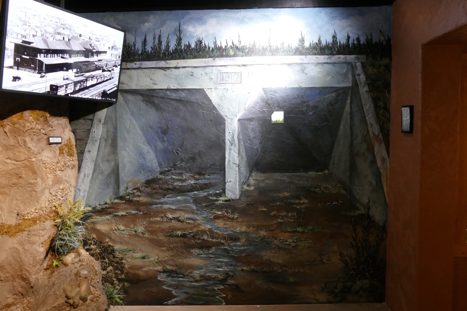

This section of the Boot Hill museum described the Hispanic community who worked in and lived near the Dodge City railroad depot. The railroad workers were not allowed to cross over the tracks, only walk through the tunnel underneath, and only on the right side. On the left side lived a red-eyed dog that would eat them.
Dodge City Kansas